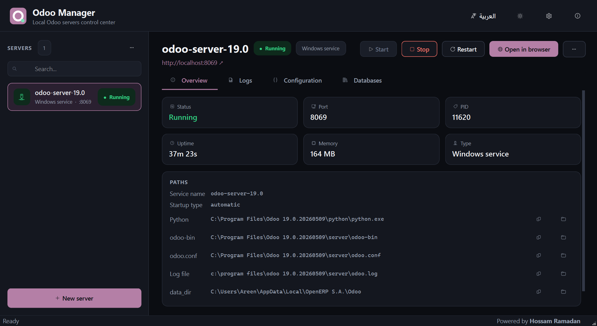
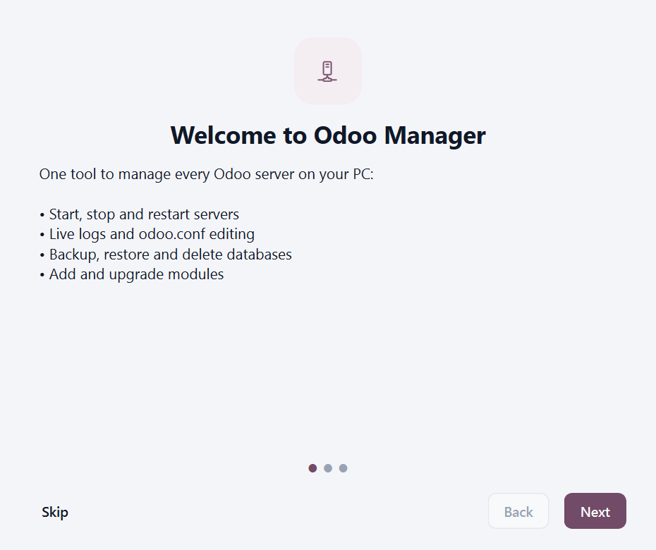
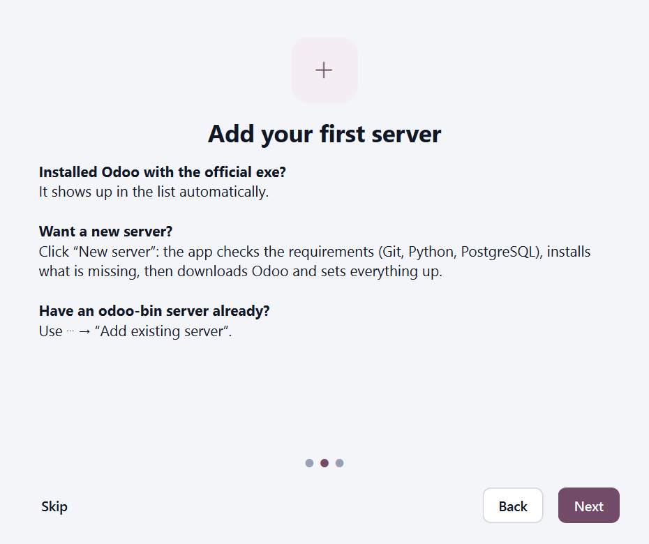
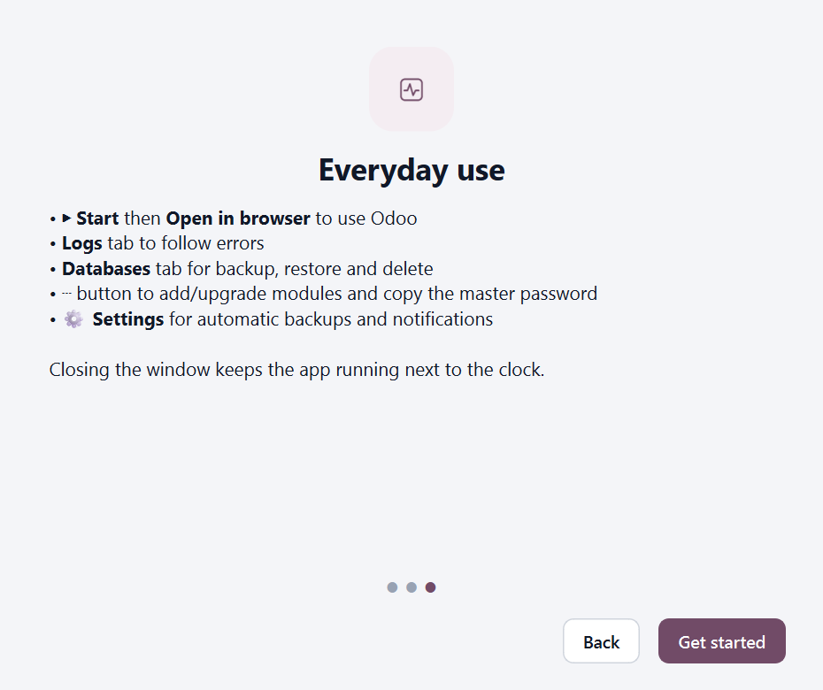
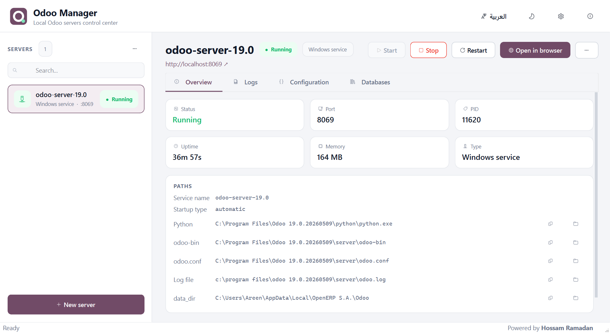
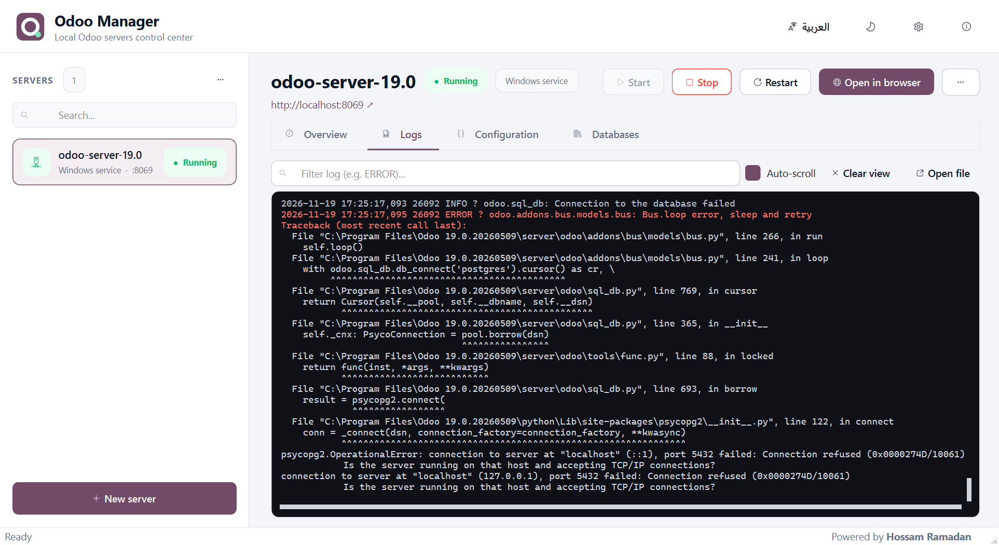
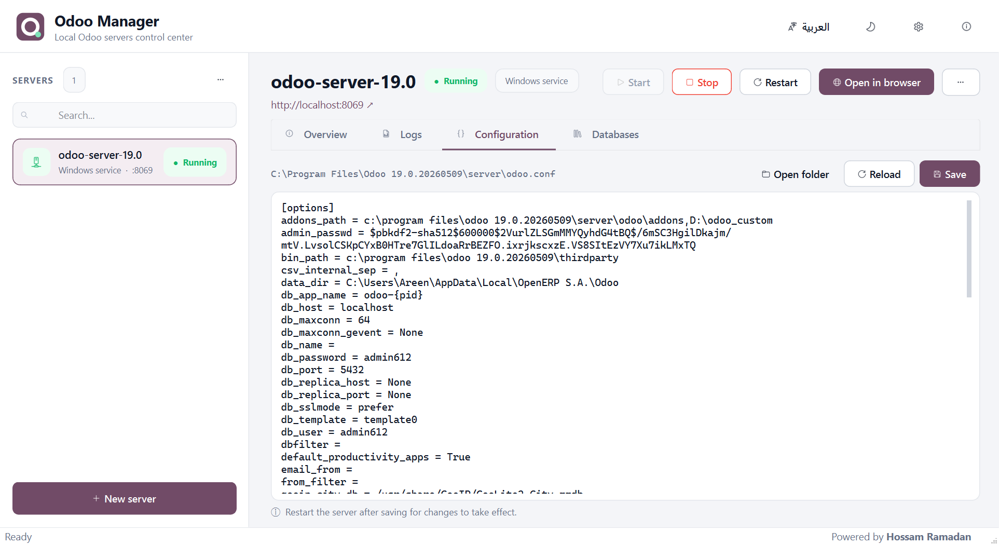
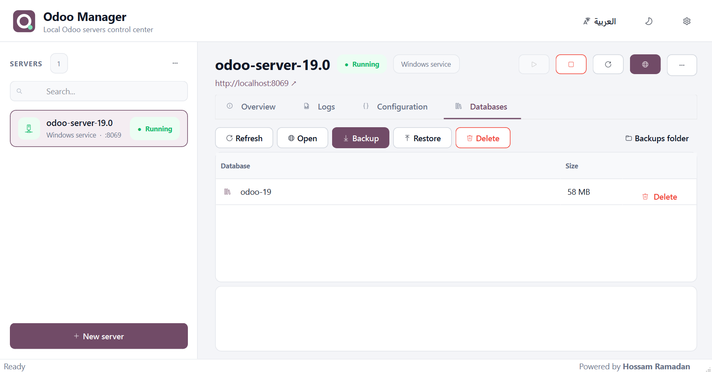
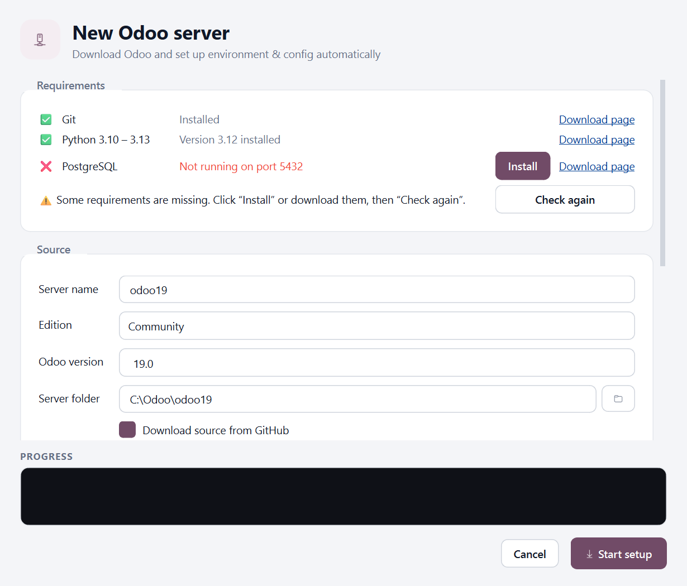
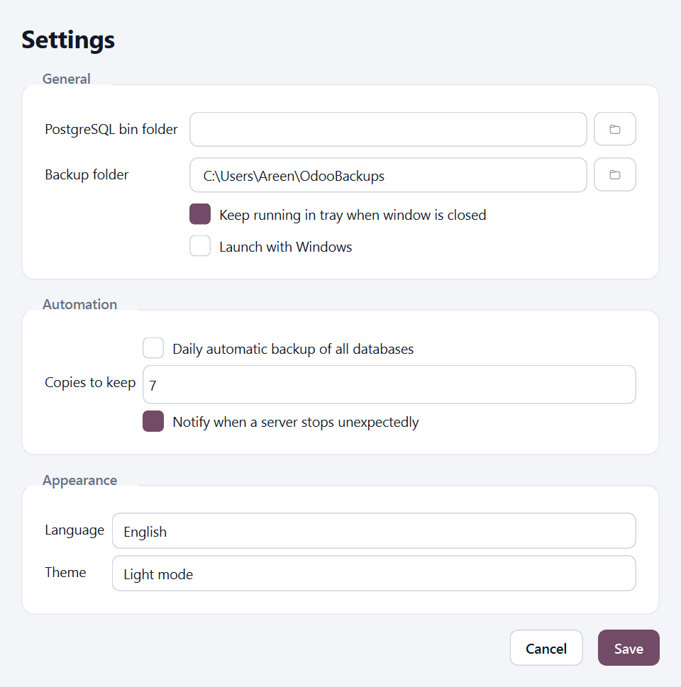

Developers and implementers on Windows juggle Odoo from the command line: editing
odoo.conf by hand, hunting for logs, taking backups from the database page and fighting
port clashes between versions. Odoo Manager puts all of that in one window.
Windows services and odoo-bin instances side by side: start, stop, restart, open in the browser.
Colour-coded live log with filtering, and an odoo.conf editor that saves with admin rights when needed.
Backup, restore and delete in Odoo’s own zip format, plus a daily automatic backup.
Drop in a module folder or zip, then install or upgrade it without touching the terminal.
Checks Git, Python and PostgreSQL, installs what is missing, then downloads Odoo and builds the environment.
Arabic and English, light and dark themes, system-tray icon, start with Windows, stop alerts.
A single 54 MB installer. The app itself needs nothing else to run — no Python, no extra runtimes.
| Requirement | Details |
|---|---|
| Operating system | Windows 10 or Windows 11, 64-bit |
| Installer | OdooManager-Setup-1.1.0.exe (≈ 54 MB) |
| Disk space | ≈ 60 MB for the app; Odoo servers you create need ≈ 2 GB each |
| To create new servers | Git, Python 3.10 – 3.13 and PostgreSQL — the wizard checks and installs them for you |
OdooManager-Setup-1.1.0.exe.Program Files\OdooManager and can be removed at any time.Windows Settings → Apps → Odoo Manager → Uninstall. Your Odoo servers and databases are never touched;
the server list and settings stay in %APPDATA%\OdooManager in case you reinstall.
A three-page welcome tour opens the first time. Meanwhile the app detects Odoo services already installed on the PC and locates PostgreSQL automatically.

1 · What the app does

2 · Add your first server

3 · Everyday use
| You have… | What to do |
|---|---|
| Odoo installed with the official .exe | Nothing — it appears in the list automatically. Installed it later? Use ⋯ → Detect Windows services. |
| Nothing yet | Click New server and follow the wizard (Chapter 7). |
| An odoo-bin server already set up | ⋯ → Add existing server, then point to Python, odoo-bin and odoo.conf. |
Servers on the side, the selected server in the middle. Status, port, PID, memory and uptime refresh every few seconds.

Overview tab of a running Odoo 19 Windows service.
| Control | What it does |
|---|---|
| Start · Stop · Restart | Controls the server. Windows services ask for admin rights (UAC). Before starting an odoo-bin server the app checks the port and names the program using it. |
| Open in browser | Opens http://localhost:<port>. Double-clicking a server in the list does the same. |
| ⋯ menu | Edit, open folder, add / upgrade module, open custom addons folder, copy master password, remove. |
| Check ports | Lists every server’s port and flags conflicts between them or with other programs. |
| Header | Language switch, light / dark theme, settings and About. |
Follow what Odoo is doing as it happens, and change its configuration without opening a text editor.

Logs tab — colour-coded by level, with auto-scroll and a filter box (for example ERROR).

Configuration tab — edit odoo.conf directly. Saving offers to restart the server so the change takes effect.
Program Files are protected by Windows. Odoo Manager saves them through a UAC prompt, so you never need to “Run as administrator”.Backup, restore and delete work directly on PostgreSQL — no master password needed — and use Odoo’s own zip format, so backups move freely between Odoo Manager and Odoo’s database page.

Databases tab — each database has its own Delete button.
| Action | How | Good to know |
|---|---|---|
| Backup | Select a database → Backup | Zip with dump.sql + filestore, saved to the backups folder |
| Restore | Restore → pick a file → new name | Accepts .zip, .dump, .backup and .sql; refuses a name that already exists |
| Delete | Delete next to the database → type its name | Permanent; works even while the server is running |
| Open | Double-click the database | Opens it in the browser |
| Daily backup | Settings → Automation | Every database on a running server, once a day, keeping the last N copies (7 by default) |
Add a module in two clicks. Odoo Manager copies it into the server’s custom addons folder and restarts the server; you then install it from Odoo’s Apps menu.
The app uses the folder in addons_path whose name contains custom (or the last non-core folder).
If the server has none — typical for the official .exe — it offers to create one and adds it to addons_path for you:
| Server type | Suggested folder |
|---|---|
| Created by the wizard | <server folder>\custom_addons (already configured) |
| Official .exe (Program Files) | %USERPROFILE%\Odoo\custom_addons |
| Any other | custom_addons next to odoo.conf, or a folder you choose |
⋯ → Upgrade module, choose the database, type the module name(s). The app runs Odoo’s upgrade in the background, shows any errors from the log, and restarts the server.
version in __manifest__.py starts with 19.0 for Odoo 19), and every module listed in depends must be available.From nothing to a running Odoo server — the wizard checks requirements, downloads Odoo from GitHub, builds a virtual environment and writes odoo.conf. A fresh Odoo 19 server took about 3 minutes in testing.

The requirements panel: missing items get an Install button.
| Item | Install button |
|---|---|
| Git | Installs Git silently |
| Python 3.10 – 3.13 | Installs Python 3.12 |
| PostgreSQL | Installs PostgreSQL 16, asks for a password and creates an odoo user |
Installs use Microsoft’s winget; each row also links to the official download page. Setup will not start until the essentials are in place.
github.com/odoo/enterprise. Give the repository URL or an existing folder; the wizard puts it first in addons_path. The master password is generated and saved in odoo.conf (admin_passwd).Set it once and let it run. Closing the window keeps Odoo Manager in the system tray, where every server can be started, stopped or opened from a right-click menu.

Settings dialog.
| Setting | Effect |
|---|---|
| PostgreSQL bin | Tools used for backup and restore (found automatically) |
| Backup folder | Where backups are saved |
| Keep in tray | Closing the window hides it next to the clock |
| Launch with Windows | Starts minimised to the tray at sign-in |
| Daily backup | Automatic backup of all databases |
| Copies to keep | Older automatic backups are deleted |
| Stop alerts | Notification when a server stops unexpectedly |
| Language · Theme | العربية / English · Light / Dark |
The problems people actually hit, and the fix for each.
| Symptom | Cause and fix |
|---|---|
| “Access Denied” creating a database | Wrong master password. Use ⋯ → Copy master password, or set a new admin_passwd in the Configuration tab and restart. |
Master password looks like $pbkdf2… | Odoo hashed it; it cannot be recovered. Set a new one in the Configuration tab. |
| “no password supplied” (port 5432) | db_user / db_password in odoo.conf do not match a PostgreSQL user. Correct them and restart. |
| Server starts then stops | Open the Logs tab. A common cause is a Python that was removed with an old Odoo install — recreate the server with the wizard. |
| “Port … already in use” | Another server or program holds the port. Use Check ports, then change http_port. |
| Internal Server Error with several versions | Each Odoo version sees the other versions’ databases. Add a dbfilter to each server’s config. |
| Restored database won’t open | It comes from an older Odoo version, or its custom modules are missing — add them with Add module. |
| Can’t log in to a restored backup | Backups from Odoo Online / Odoo.sh often have no local password. Reset the user’s password in the database. |
| PostgreSQL shows ✕ in the wizard | PostgreSQL is not running — uninstalling an old Odoo may remove it. Click Install or start its service. |
Where everything lives.
Odoo is a trademark of Odoo S.A. Odoo Manager is an independent tool and is not affiliated with or endorsed by Odoo S.A.